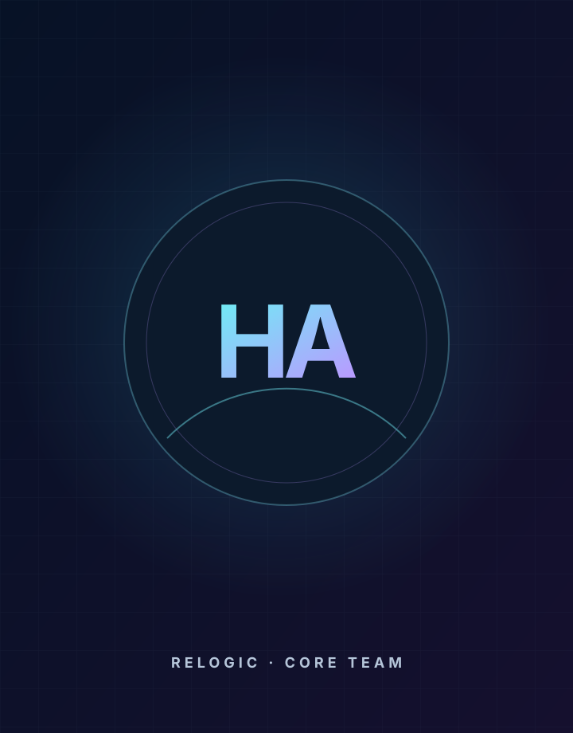

Core Team · Relogic Profile
Hassan Arif
Database Programmer
Hassan Arif is currently listed on the Relogic website as Database Programmer within the Core Team group. This individual page is prepared to hold a verified professional biography, background, expertise, selected work and public profile links.
Profile-data note: only the name, role, team grouping and existing image reference are carried over from the current Relogic site. No CV, education, employment history or achievements have been invented.
Profile identity
NameHassan Arif
Current roleDatabase Programmer
TeamCore Team
OrganizationRelogic Solutions
Persona details
Professional profile
This layout is ready for the person’s confirmed professional information. Replace the prompts below when the verified details are available.
BiographyAdd a concise verified biography covering current responsibilities, professional background and the person’s contribution to Relogic.
ExpertiseAdd confirmed areas of specialization, technologies, disciplines or advisory focus.
Selected workAdd verified projects, research, products, publications or portfolio highlights.
Education & credentialsAdd only confirmed education, certifications, affiliations or professional credentials.
Public linksAdd LinkedIn, Google Scholar, GitHub, portfolio or other approved public links.